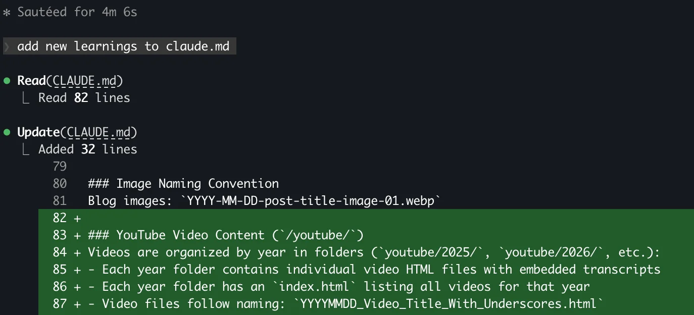

If you’re using Claude Code and you’re still re-explaining your codebase at the start of every session, you’re wasting time and tokens. A lot of both.
I’ve been using Claude heavily for the past few months on various projects, and I’ve stumbled upon a workflow that sounds almost too simple to be worth writing about. But here’s the thing: the best productivity hacks usually are.
The Problem
Every time you start a new session with Claude, you’re essentially introducing your code to a stranger. Claude is not familiar with your repository structure. It doesn’t know your conventions. It doesn’t know that you use Pydantic for validation, that you have a weird legacy module that should never be touched, or that your tests live inspec/instead oftests/because someone made a questionable decision five years ago.
So you explain. Again. And again. And again.
This is wasteful. Let’s fix it.
Tip #1: Run /init on Every New Repository
Claude Code has a built-in command that most people either don’t know about or don’t use:/init.
When you run/initin a new repository, Claude analyzes your codebase and creates aCLAUDE.mdfile at the root. This file contains:
Project structure and key directories
Main technologies and frameworks in use
Coding conventions it detected
Important files and their purposes
Build and test commands
This file gets automatically injected into Claude’s context at the start of every session. No more explaining. No more “wait, what framework is this again?” Claude justknows.
Here’s the workflow:
cd your-project
claude
> /init
That’s it. Claude explores your repository, asks a few clarifying questions as needed, and generates aCLAUDE.mdfile that serves as its persistent memory.
I’ve seen developers spend 10-15 minutes at the start of each session getting Claude up to speed. With/init, you spend 2 minutes once, and you’re done forever.
This is especially valuable for larger codebases or team projects where context matters most.
Tip #2: End Every Session with “Add New Findings to CLAUDE.md”
This is where it gets interesting.
During a coding session, Claude learns things about your project that weren’t obvious from the initial scan. Maybe it discovered that the authentication module has some undocumented quirks. Maybe it figured out that certain tests need to be run in a specific order. Maybe it found a performance gotcha that isn’t documented anywhere.
All of this knowledge dies when the session ends. Unless you capture it.
At the end of every meaningful session, just type:
Add new findings to CLAUDE.md
Claude will update the file with everything it learned during the session. Focus on patterns, gotchas, and non-obvious decisions, not every small detail. The quirks, the gotchas, the patterns, the “oh, THAT’s why this is done this way” moments, all preserved for the next session.
The key difference:/inittells Claude what your codebaseis(structure, frameworks, conventions). "Add new findings" tells Claude what you'velearnedabout how it actually works in practice (quirks, gotchas, undocumented behaviors). Both matter, and they complement each other.
YourCLAUDE.mdbecomes a living document. It starts as a basic project overview and evolves into a comprehensive knowledge base that represents not just what your codebaseis, but what Claude haslearnedabout working with it.
Why This Works
This is basically giving Claude a second brain that persists across sessions. Instead of treating each session as isolated, you’re building cumulative knowledge.
After a few weeks of this workflow, myCLAUDE.mdfiles have become genuinely useful documentation, not just for Claude, but for onboarding new developers. It’s almost an accidental side effect: you end up with living documentation that actually reflects how the codebase works in practice.
The Anti-Pattern: Ignoring CLAUDE.md
I’ve seen developers create the initialCLAUDE.mdand then never touch it again. This is leaving value on the table.
The real power comes from the feedback loop:
/initcreates the baselineWorking sessions generate new knowledge
“Add to CLAUDE.md” captures that knowledge
Next session starts smarter
Skip step 3, and you’re back to explaining things repeatedly.
Bonus: Commit Your CLAUDE.md
Some people addCLAUDE.mdto.gitignore. Don’t do this.
First, it’s useful documentation for your team. Second, if you’re working across multiple machines, you want that knowledge to follow your repo. Third, it creates accountability: you can see how your understanding of the codebase evolved over time.
If multiple developers are updating it, consider a quick review before committing to avoid conflicts.
Bottom Line
Two commands. That’s all it takes:
/initwhen you start working with a new repo
“Add new findings to CLAUDE.md”when you wrap up a session
No complex setup. No third-party tools. No subscription to some “AI workflow optimization platform” that’s just a wrapper around an API.
Just use the tools you already have, and use them properly.
Those of you who actually do this instead of complaining about AI not understanding your codebase are quite likely to be in a good spot right now 😉
What workflow improvements have you discovered? I’m always interested in what actually works in practice.
Keep rockin’.